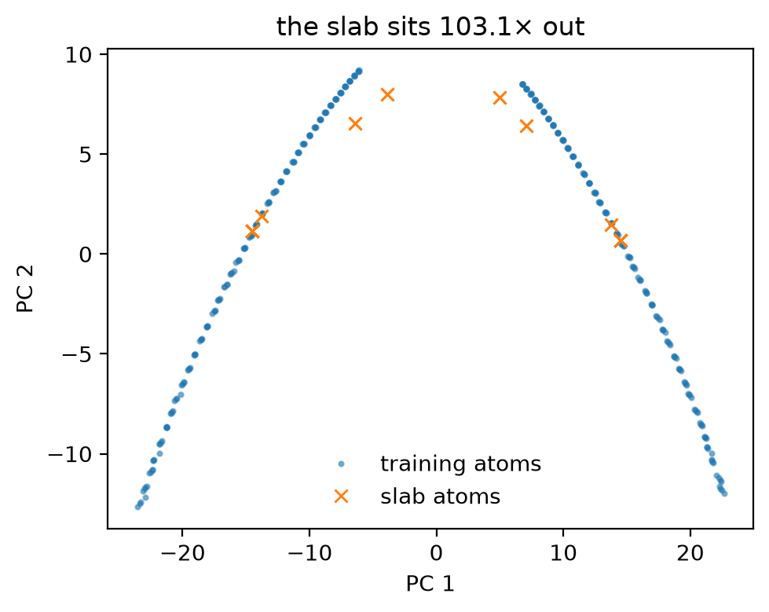

Tutorial 9: bring your own data¶
The earlier tutorials used silicon. This tutorial is a template for your own system. You do these steps:
- State the property that you need.
- Build a training set for that property, and fit.
- Measure the property.
- Find where the structures of the property are in descriptor space.
- Repair the dataset one time.
Without changes, the notebook runs on a demo: zincblende GaAs and its (100) surface energy. You can give your own structure in Step 2.
Goals
- State the target property and the tolerance it needs, before fitting.
- Label reference structures, and isolated atoms for the reference energies.
- Fit a two-element model and measure the property against the labeller.
- Use a coverage check to see why the first fit misses, and repair it.
It uses the steps of Tutorials 4 and 6, and is adapted from notebook D of the MLIP School 2026.
Run this notebook. Install uv. Then run this command:
uvx marimo edit --sandbox https://raw.githubusercontent.com/ACEsuit/ace-jax/main/docs/user/tutorials/notebooks/school_byod.py
The notebook opens in your browser. You do not need an account. You can also open the notebook in molab, the marimo hosted service. You must sign in to run it there.
This website shows a static copy of the notebook, run on a CPU when the site was built. The interactive controls show their default values. Run time: approximately 2 minutes.
import io
import pathlib
import time
import jax
jax.config.update("jax_enable_x64", True) # fitting needs float64
import marimo as mo
import matplotlib.pyplot as plt
import numpy as np
from ace_jax import ACECalculator
from ace_jax.tutorials import campaign as C
from ace_jax.tutorials import labels as L
from ace_jax.tutorials import structures as T
Step 1: declare the target¶
You fit a potential for a purpose. Before you select data, write down what you will calculate with the potential, how, and to what accuracy. The target sets the dataset. The tolerance tells you when the work is complete. For the demo, the target is the unrelaxed (100) surface energy of GaAs,
to within 0.01 eV/Ų of the labeller.
target = dict(name="GaAs(100) surface energy, unrelaxed", quantity="gamma", units="eV/Ų",
tolerance=0.01, method="(E_slab - N_slab * E_bulk / N_bulk) / (2 A)")
Checkpoint 1 passed: the target is GaAs(100) surface energy, unrelaxed, to within 0.01 eV/Ų.
Step 2: your system¶
Upload one periodic structure (.xyz, .extxyz, .cif or .vasp; a
bare POSCAR must be renamed POSCAR.vasp) with one or two elements and
at most 64 atoms. Without an upload the notebook uses the demo: an 8-atom
cubic cell of zincblende GaAs.
The labels for the demo are included with the tutorial. For your own system, install the labeller:
- in a marimo sandbox, add
mace-torchto the packages panel; - in other environments, use this command:
MACE-MPA-0 covers most of the periodic table. But it is a foundation model, so in Step 3, compare its result for your system with the literature.
Interactive controls in the notebook (this page shows their defaults): your structure = []
from ase.io import read
if upload.value:
_f = upload.value[0]
_fmt = {"xyz": "extxyz", "extxyz": "extxyz", "cif": "cif", "vasp": "vasp"}[_f.name.rsplit(".", 1)[-1].lower()]
system = read(io.StringIO(_f.contents.decode()), format=_fmt, index=-1)
demo = False
else:
system, demo = T.d_system(), True
species = tuple(sorted(set(system.get_chemical_symbols())))
system_ok = (len(system) <= 64 and system.cell.rank == 3 and bool(system.pbc.all()) and 1 <= len(species) <= 2)
mo.md(f"System: **{system.get_chemical_formula()}**, {len(system)} atoms, species {', '.join(species)}"
+ (" (the demo)." if demo else "."))
System: As4Ga4, 8 atoms, species As, Ga (the demo).
Checkpoint 2 passed: a periodic cell with one or two elements and at most 64 atoms.
Step 3: references and the truth¶
There are two types of reference:
- an isolated atom of each element: one atom in a 15 Å box. Its energy is the reference energy \(E_0\) of the element. If the training set has an isolated atom, it sets \(E_0\) (Tutorial 1).
- the target structures: the bulk cell, and a 4-layer (100) slab with 8 Å of vacuum. Their labelled energies give the true value of the target.
The fit never uses the target structures for training.
mo.stop(not system_ok, mo.md("Step 2's checkpoint must pass first."))
URL = "https://raw.githubusercontent.com/ACEsuit/ace-jax/main/docs/user/tutorials/data/school/d/labels-mpa-0.xyz"
_here = (mo.notebook_dir() / "../data/school/d/labels-mpa-0.xyz") if mo.notebook_dir() else None
cache = L.LabelCache.from_file(_here if _here is not None and _here.exists() else URL) if demo else None
work = pathlib.Path("ace_jax_tutorial_9")
work.mkdir(exist_ok=True)
def label(xs):
return L.label(xs, model="mpa-0", cache=cache)
try:
isolated = label(T.d_isolated(species))
target_structures = label(T.d_targets(system))
except L.LabelsUnavailable as _e: # your own system without the labeller installed
mo.stop(True, mo.callout(mo.md(f"**Labels needed.** {_e}"), kind="warn"))
def gamma(e_bulk, e_slab):
b, s = target_structures
return T.surface_energy(e_bulk, len(b), e_slab, s)
truth = gamma(target_structures[0].info["energy"], target_structures[1].info["energy"])
mo.md("| reference | energy (eV) |\n|---|---|\n"
+ "\n".join(f"| isolated {a.get_chemical_symbols()[0]} | {a.info['energy']:.4f} |" for a in isolated)
+ f"\n\nThe labeller's {target['name']}: **{truth:.4f} {target['units']}** "
f"({truth * 16.0218:.2f} J/m²). Labels used so far: {L.labels_used()}.")
| reference | energy (eV) |
|---|---|
| isolated As | -1.6837 |
| isolated Ga | -0.3299 |
The labeller's GaAs(100) surface energy, unrelaxed: 0.0842 eV/Ų (1.35 J/m²). Labels used so far: 4.
Step 4: a training set and a first fit¶
The recipe of Tutorial 4, applied to your cell: copies with the cell scaled over \(1 \pm s\) and the atoms rattled, plus the isolated atoms. The sliders move only to the settings that have demo labels in the tutorial.
The basis is categorical in the elements (Tutorial 3), order 3 and total degree 8. The school version of this notebook needed more observations than basis functions, because its least-squares fit has no prior. The prior of the evidence fit regularises an underdetermined basis, so this rule is not necessary here. But more data still helps.
strain = mo.ui.slider(steps=list(T.D_STRAINS), value=0.06, label="strain range s", show_value=True)
rattle = mo.ui.slider(steps=list(T.D_RATTLES), value=0.03, label="rattle σ (Å)", show_value=True)
n_train = mo.ui.slider(steps=list(T.D_NTRAIN), value=40, label="training cells", show_value=True)
mo.hstack([strain, rattle, n_train], justify="start")
Interactive controls in the notebook (this page shows their defaults): strain range s = 0.06, rattle σ (Å) = 0.03, training cells = 40
from ace_jax.basis.model import BasisSpec, build_basis
from ace_jax.fit.pipeline import FitConfig, fit, load_fit_data, save_model
training = label(T.d_training(system, strain.value, rattle.value, n_train.value))
_held_out = {T.structure_fingerprint(a) for a in target_structures}
assert not any(T.structure_fingerprint(a) in _held_out for a in training), "a target structure is in the training set"
basis = build_basis(BasisSpec(order=3, max_degree=8, rcut=5.5, elements=species))
def fit_model(train, out):
_cfg = FitConfig(model=basis, arm="linear", m_per_species=0, e0="lsq", opt="lbfgs", r0=None,
rungs=("map",), predict_stats="recompute", predict_train=False,
energy_key="energy", force_key="forces", virial_key="virial").validate()
_res = fit(_cfg, load_fit_data(_cfg, train=list(train), log=lambda *a: None), log=lambda *a: None)
return str(save_model(_res, work / out, log=lambda *a: None))
_t = time.time()
model_v1 = fit_model([*isolated, *training], "fit_v1")
v1_seconds = time.time() - _t
mo.md(f"{len(training)} training cells + {len(isolated)} isolated atoms; basis of "
f"**{basis.meta['len_basis']}** functions; fitted in {v1_seconds:.0f} s. "
f"Labels used so far: {L.labels_used()}.")
40 training cells + 2 isolated atoms; basis of 632 functions; fitted in 19 s. Labels used so far: 44.
Step 5: measure the target¶
def model_gamma(model_file):
"""The target computed with a fitted model, on the labeller's target structures."""
_calc = ACECalculator(model_file, skin=0)
_E = []
for _a in target_structures:
_b = _a.copy(); _b.calc = _calc
_E.append(_b.get_potential_energy())
return gamma(*_E)
gamma_v1 = model_gamma(model_v1)
err_v1 = abs(gamma_v1 - truth)
mo.md(f"| | γ ({target['units']}) |\n|---|---|\n| labeller | {truth:.4f} |\n| model v1 | {gamma_v1:.4f} |\n"
f"| error | {err_v1:.4f} (tolerance {target['tolerance']}) |")
| γ (eV/Ų) | |
|---|---|
| labeller | 0.0842 |
| model v1 | -0.4357 |
| error | 0.5198 (tolerance 0.01) |
Checkpoint 3 passed: the bulk-only model misses the target by 0.520 eV/Ų, beyond the tolerance. Its surface energy is even negative: the model has the slab more stable than the bulk, which no real surface is, a sure sign it is extrapolating. The next step asks why.
Step 6: coverage¶
Compute every atom's descriptor in the model's own basis, for the training cells and for the target structures, and measure how far the slab's most exposed atom sits from the nearest training atom, in units of the training atoms' own spacing. Tutorial 6 used the median atom instead (silicon's slab atoms sat well over 10× out); half of a thin slab's atoms are bulk-like, so here the worst one tells more. A ratio near 1 means the target is inside the data.
Xt = np.concatenate(C.atom_descriptors(training, model_v1))
Xq = np.concatenate(C.atom_descriptors(target_structures[1:], model_v1)) # the slab's atoms
ratio_v1 = C.nn_ratio(Xt, Xq, q=1.0) # the slab's most exposed atom
_mu = Xt.mean(0)
_, _, _Vt = np.linalg.svd(Xt - _mu, full_matrices=False)
_pt, _pq = (Xt - _mu) @ _Vt[:2].T, (Xq - _mu) @ _Vt[:2].T
_fig, _ax = plt.subplots(figsize=(5, 4))
_ax.plot(_pt[:, 0], _pt[:, 1], ".", ms=4, alpha=0.5, label="training atoms")
_ax.plot(_pq[:, 0], _pq[:, 1], "x", ms=6, label="slab atoms")
_ax.set_xlabel("PC 1"); _ax.set_ylabel("PC 2"); _ax.legend(frameon=False)
_ax.set_title(f"the slab sits {ratio_v1:.1f}× out")
_fig.tight_layout()
_fig

Step 7: one repair round¶
The target's atoms are surface atoms; the training set has none. Add thin (100) slabs, 3 and 5 layers (never the 4-layer target), each with 15 rattles from 0 to 0.12 Å, and refit with exactly the same basis, so the change is down to the data alone.
repair = label(T.d_repair(system))
model_v2 = fit_model([*isolated, *training, *repair], "fit_v2")
gamma_v2 = model_gamma(model_v2)
err_v2 = abs(gamma_v2 - truth)
_Xt = np.concatenate(C.atom_descriptors([*training, *repair], model_v2))
ratio_v2 = C.nn_ratio(_Xt, np.concatenate(C.atom_descriptors(target_structures[1:], model_v2)), q=1.0)
from ase.io import write as _write
_write(str(work / "train.xyz"), [*isolated, *training, *repair])
mo.md(f"| model | training structures | γ error ({target['units']}) | coverage ratio |\n|---|---|---|---|\n"
f"| v1 | {len(training) + len(isolated)} | see Step 5 | see Step 6 |\n"
f"| v2 | {len(training) + len(isolated) + len(repair)} | {err_v2:.4f} | {ratio_v2:.1f} |\n\n"
f"Labels used in all: {L.labels_used()}.")
| model | training structures | γ error (eV/Ų) | coverage ratio |
|---|---|---|---|
| v1 | 42 | see Step 5 | see Step 6 |
| v2 | 72 | 0.0000 | 0.0 |
Labels used in all: 74.
Checkpoint 4 passed: with the repair set the error falls from 0.5198 to 4.4e-06 eV/Ų, within the tolerance, and the slab's most exposed atom sits 1.1e-06× out instead of 103×: the repair slabs, 3 and 5 layers thick, contain the target's surface environments almost exactly, though not the 4-layer target itself.
Take it home¶
Both models, and the labelled training set (train.xyz, written in
Step 7), are in ace_jax_tutorial_9/. The same fit from the command line:
From here: Tutorial 7 automates the next rounds, choosing structures from MD by novelty or by the model's own uncertainty.
Exercises¶
- The recipe. Move the sliders: which matters most for the bulk-only error, the strain range, the rattle or the number of cells? Does any setting meet the tolerance without slabs?
- Your system. Upload your own structure and run the notebook through. Compare the labeller's value with the literature first: the labeller is a model too (Tutorial 8).
- Another target. Make the target the (110) surface: in Step 3,
replace the slab with
surface(system, (1, 1, 0), 4, vacuum=8.0)(fromase.build; it needs the labeller installed) and repeat. Does the (100) repair set help?